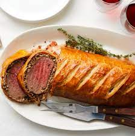
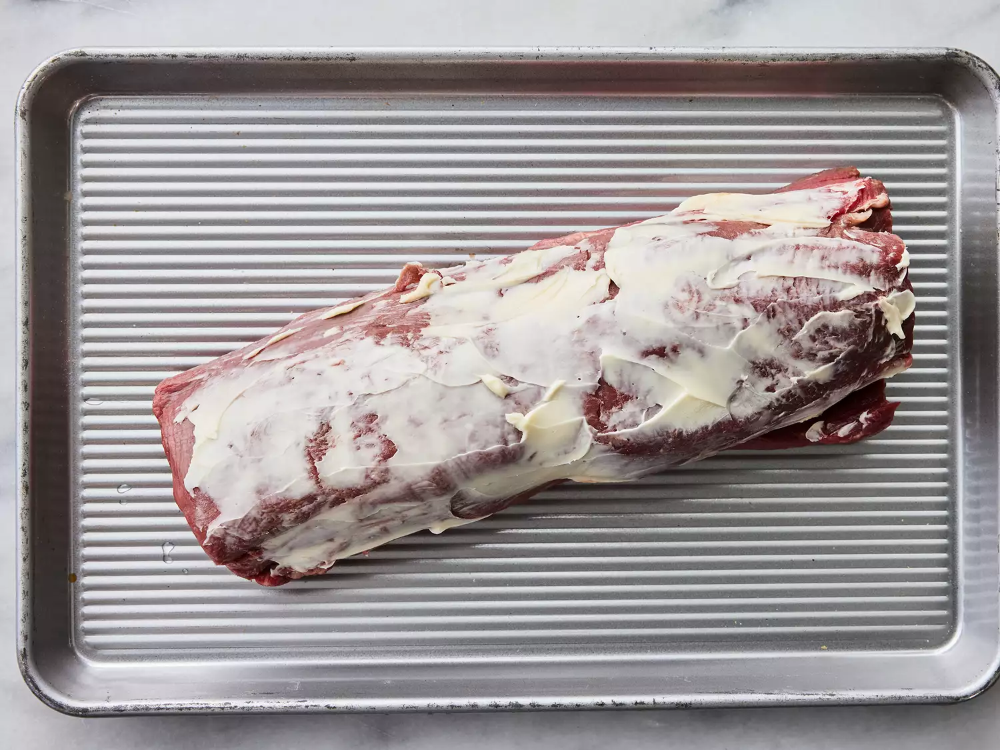
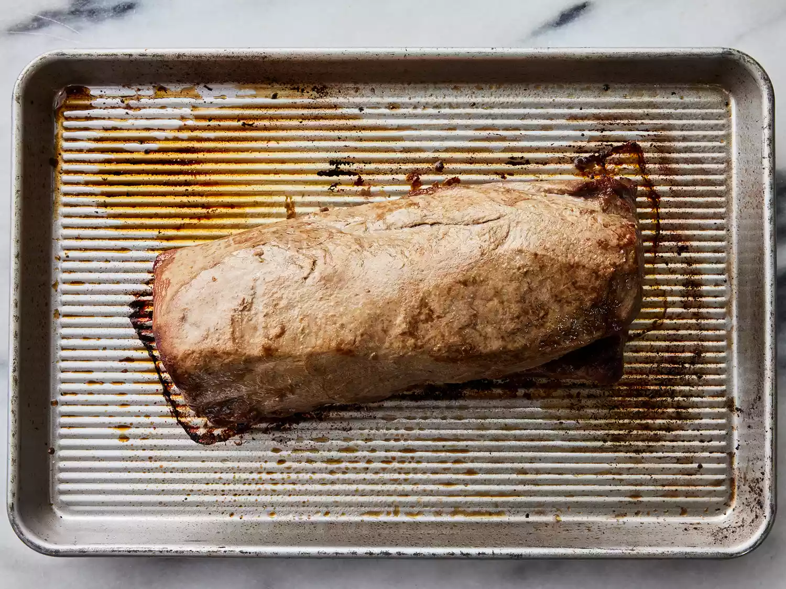
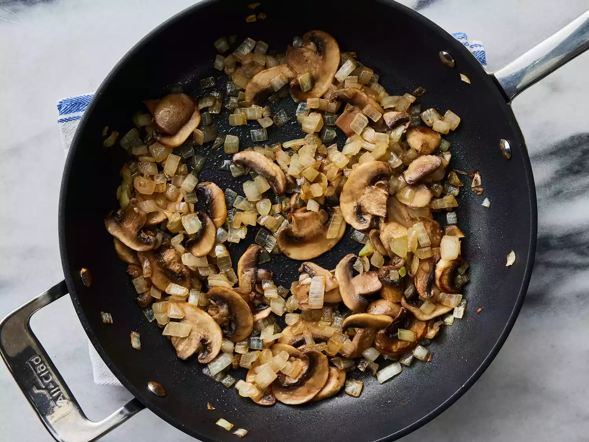
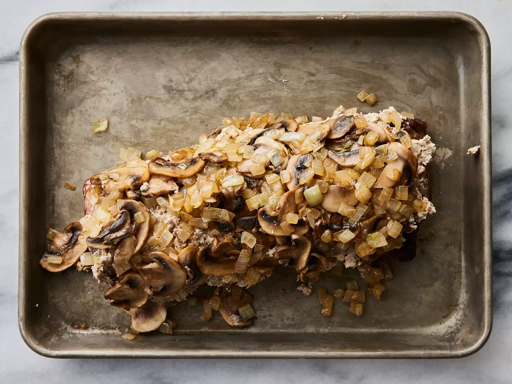
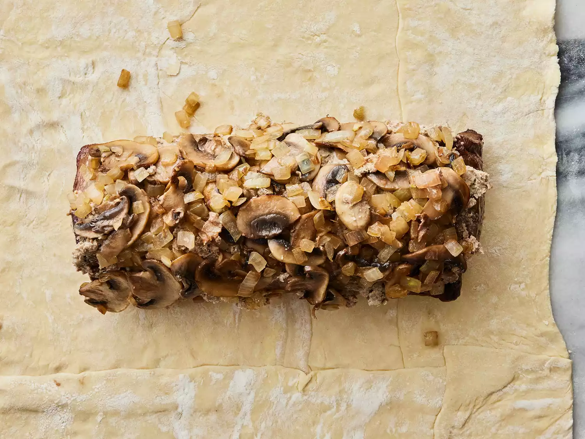
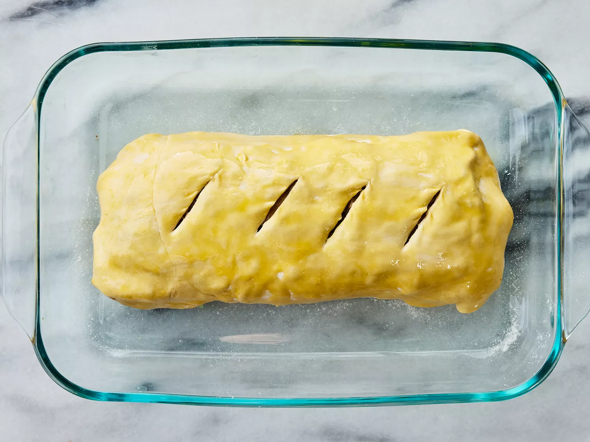
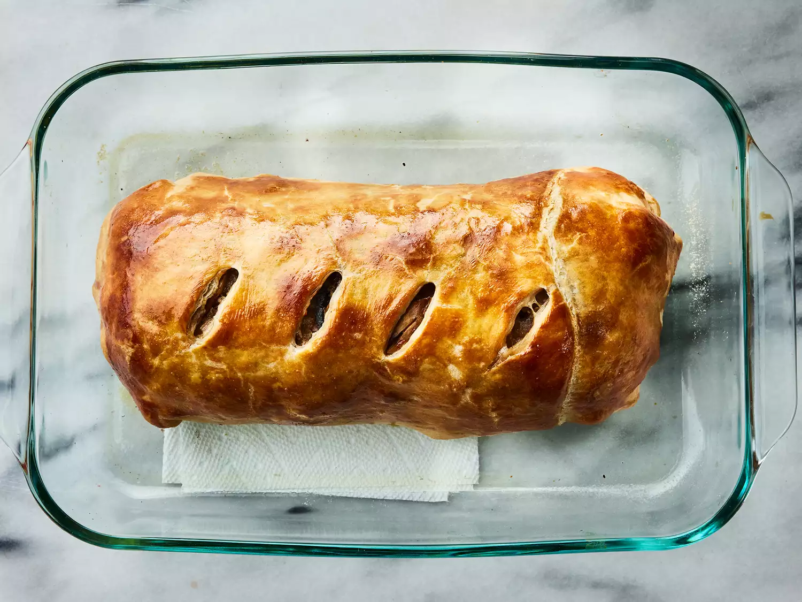
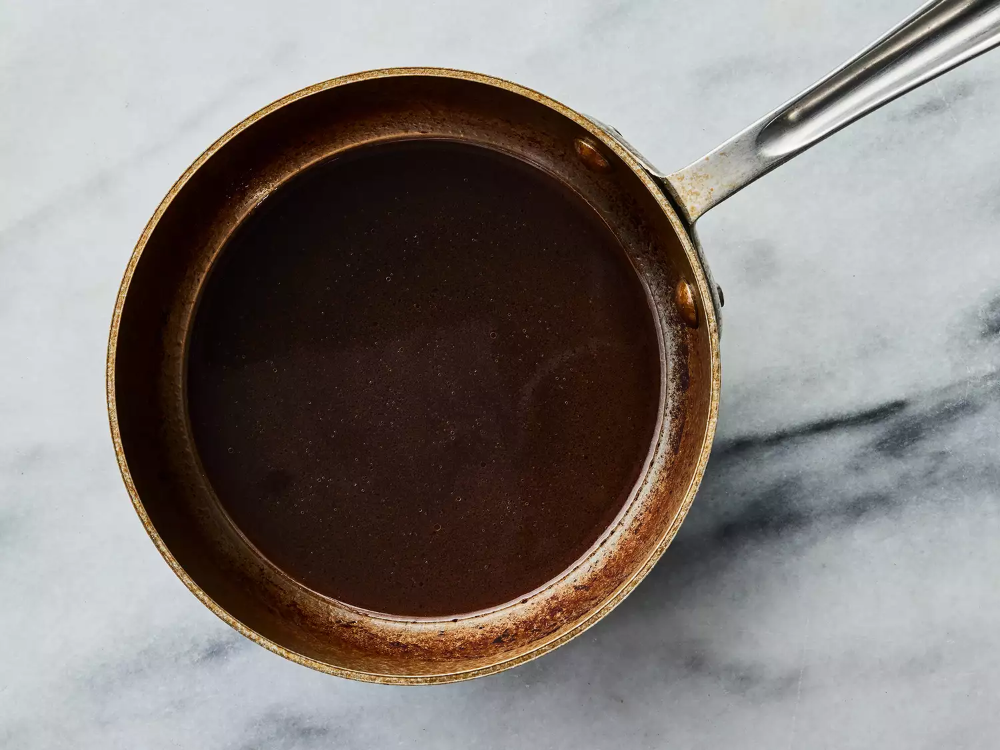

Beef Wellington

Description
Beef Wellington is a dish that consists of a cut of beef that is coated in paté, wrapped in puff pastry, and baked until the pastry is a beautiful golden brown. The classic English dish is named after Arthur Wellesley, 1st Duke of Wellington.
Ingredients
- 2 ½ pounds beef tenderloin
- 4 tablespoons butter, softened, divided
- 2 tablespoons butter
- 1 onion, chopped
- ½ cup sliced fresh mushrooms
- 2 ounces liver paté
- salt and pepper to taste
- 1 (17.5 ounce) package frozen puff pastry, thawed
- 1 large egg yolk, beaten
- 1 (10.5 ounce) can beef broth
- 2 tablespoons red wine
Steps
- Preheat the oven to 425 degrees F (220 degrees C).
- Place beef tenderloin in a baking dish. Spread 2 tablespoons softened butter over beef.

- Bake in the preheated oven until browned, 10 to 15 minutes. Remove beef from the pan and reserve pan juices; allow beef to cool completely.

- Increase oven temperature to 450 degrees F (230 degrees C).
- Melt 2 tablespoons butter in a skillet over medium heat. Sauté onion and mushrooms in butter for 5 minutes. Remove from heat and let cool.

- Mix paté and remaining 2 tablespoons softened butter together in a bowl; season with salt and pepper. Spread paté mixture over beef. Top with onion and mushroom mixture.

- Roll out puff pastry dough to about 1/4-inch thickness and place beef in the center.

- Fold up and seal all the edges, making sure the seams are not too thick. Place beef in a 9x13-inch baking dish, cut a few slits in the top of dough, and brush with egg yolk.

- Bake in the preheated oven for 10 minutes. Reduce heat to 425 degrees F (220 degrees C) and continue baking until pastry is a rich, golden brown, 10 to 15 minutes. An instant-read thermometer inserted into the center should read between 122 to 130 degrees F (50 to 54 degrees C) for medium rare. Set aside to rest.

- Meanwhile, place reserved pan juices in a small saucepan over high heat. Stir in beef broth and red wine; boil until slightly reduced, about 5 minutes. Strain and serve with beef.

- Serve hot and enjoy!

Go to Top
Return to Home Page